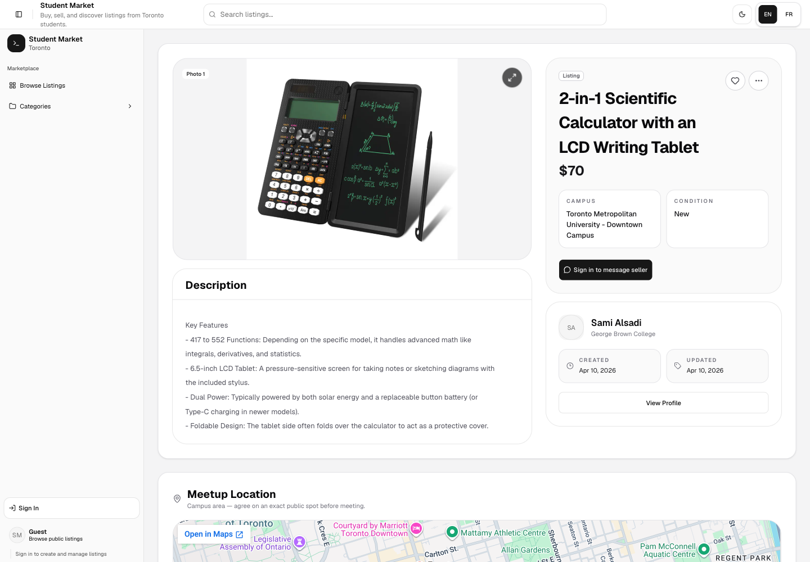
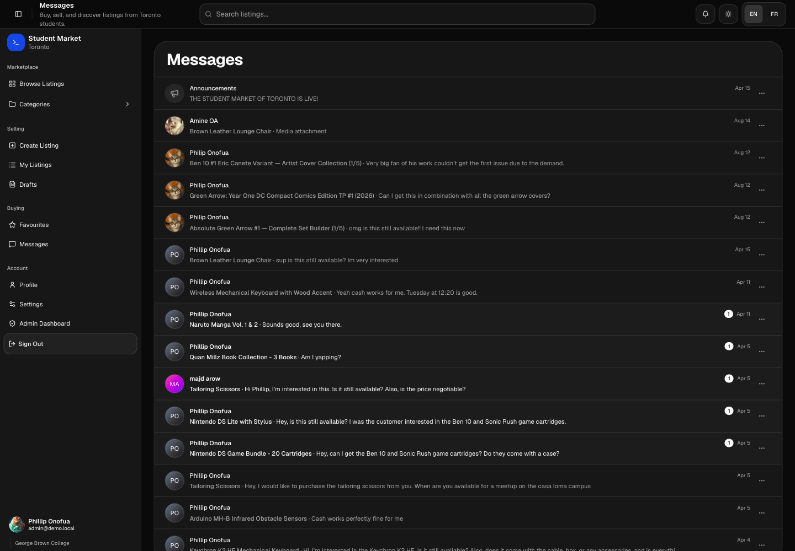
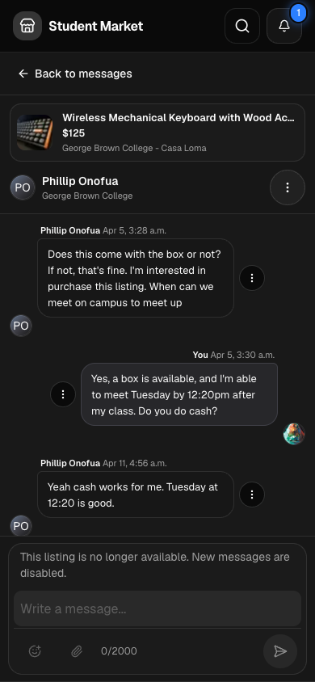
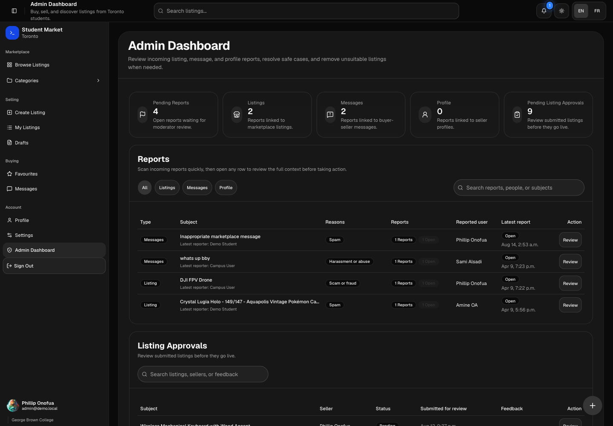
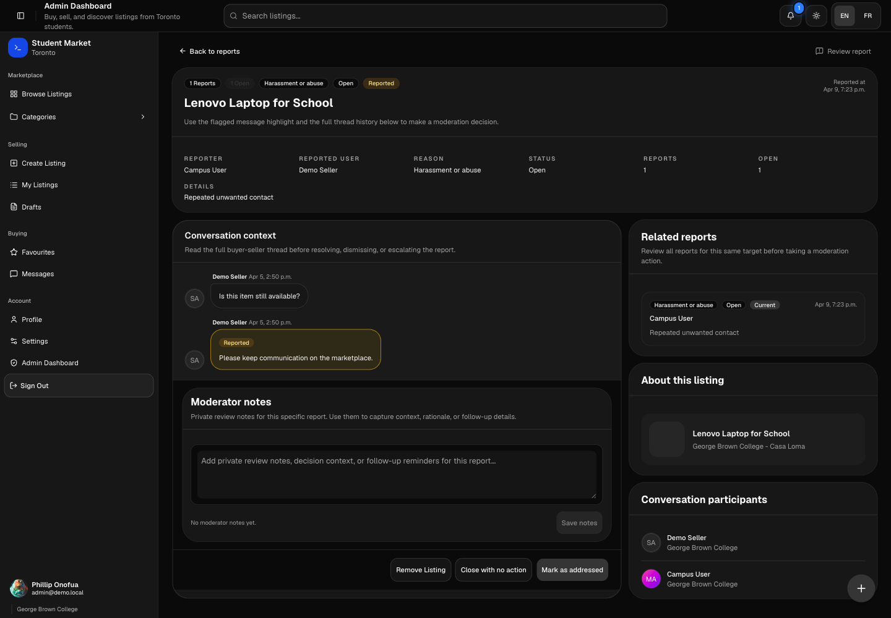
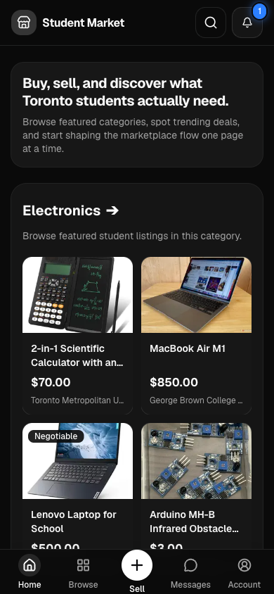
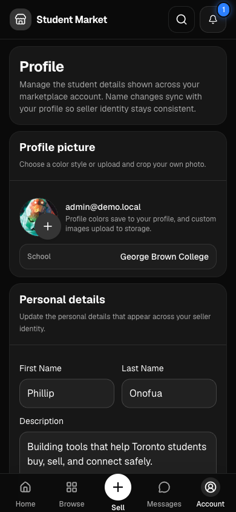

Inside the project · Full-stack web application
Student Market of Toronto
A student marketplace that connects discovery, selling, messaging, account management, and moderation in one responsive product.

01 · Discovery
Find relevant items quickly
The marketplace is organized around the questions a student has before opening a listing: what is available, how much does it cost, and where is the seller located?
Search, categories, favourites, and campus information share one browsing flow, reducing the need to jump between disconnected pages.

02 · Listing flow
Move from interest to contact
Each listing keeps the product media and essential details prominent while connecting the buyer directly to the seller and a practical campus meetup location.
Behind the interface, authenticated accounts, uploaded images, listing records, saved items, and seller identity have to remain consistent as the listing changes.


03 · Messaging
Keep every conversation tied to its item
Marketplace messages retain product context, participants, and unread state. That makes it easier to coordinate several purchases without losing track of which conversation belongs to which listing.
The responsive version prioritizes scanability and direct access to active threads without attempting to reproduce the desktop layout at a smaller scale.

04 · Administration
Give trusted roles the right controls
The admin workspace separates moderation from the regular marketplace experience. Role-aware navigation exposes reporting and approval tools only to the accounts that need them.
Summary metrics and queues help an administrator understand what requires attention before opening an individual record.

05 · Reporting
Support informed moderation decisions
A report alone rarely contains enough context. The review page brings the reported message, surrounding conversation, prior reports, user details, and the related listing into one workspace.
Private moderator notes preserve the reasoning behind a decision and make follow-up work easier to understand.


06 · Responsive design
Preserve the product flow on mobile
Mobile is treated as a first-class marketplace experience. Browsing, messaging, profile management, and navigation reorganize around the actions that matter most on a phone.
The result is not a compressed desktop page; it is the same product model expressed through a more focused interface.
What this project demonstrates
Student Market shows my ability to connect interface design with authentication, relational data, storage, responsive behavior, communication features, and role-based administration across a complete product.
Continue exploring